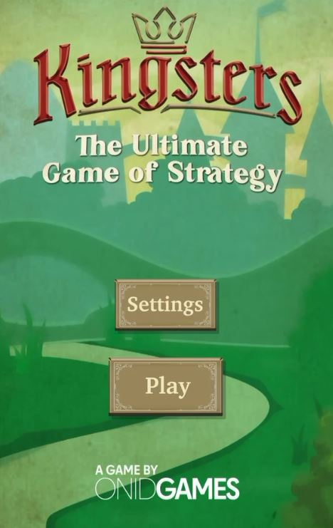
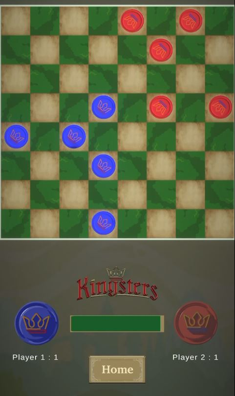

Kingsters
Released
Download on App Store




Project Overview
Kingsters is a modern strategy board game that blends the tactical depth of chess with the dynamic movement of checkers, creating a fast-paced yet deeply strategic experience. Developed at Onid Games, the project aimed to design a multiplayer game that's easy to learn but hard to master—accessible to all ages while rewarding advanced strategy and foresight.
Gameplay Features
- Strategic board gameplay combining chess and checkers mechanics
- Unique jumping system allowing chain moves (double, triple, or quadruple jumps)
- Online multiplayer with ranking and matchmaking systems
- AI opponents for offline play with adjustable difficulty
- Fast-paced matches (1-10 minutes per game)
- Personal rankings and battle formations
My Contributions
- Implemented core board logic and jumping mechanics (multi-directional and multi-piece jumps)
- Designed and balanced AI opponent behavior for offline play
- Integrated online multiplayer functionality with ranking and matchmaking systems
- Collaborated on UI/UX design for smooth player interaction
- Optimized performance for a wide range of mobile devices
Technical Details
Built using Unity and C#, Kingsters features a robust architecture supporting both online and offline gameplay. The game includes:
- Custom pathfinding for piece movement and jump calculations
- State management for turn-based gameplay
- Network synchronization for real-time multiplayer
- Device-optimized graphics and animations
Try It Out
Kingsters is available for download on the App Store. Experience the strategic depth and fast-paced gameplay today!
Download on App Store